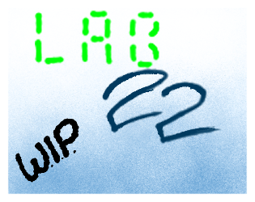
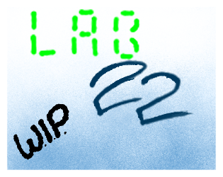

My name is Jackson Chitwood. I am an artist, animator,and now, programmer!
Able to use Html, CSS, and JavaScript. I have been drawing since before I remember. So far, I have been animating for about 5 years,
although it was very small in the beginning. Now I feel way more confident with my animations and anatomy (although I do love squash and stretch).
I've only begun coding in about 2020 with my Computer Science teacher. I didn't anticipate coding when entering his class, but starting with Visual Basic was amazing.
I loved making with this language and I wanted to go deeper and further into it.

Here is some of my work that I've done. My animation is typically 16 fps animated on 2's,
but I can work at the industry standard of 24 fps on 1's. I've worked on some games with artwork such as RunnerOS in the GMTK Game Jam of 2020,
and Lab22.
I have loved animation for as long as I've known, beginning with Newgrounds and Flash movies.
I have many role models around the industry, like Stephan Wan, Greg McMahon (Gregzilla), and the biggest one...
James Baxter
Projects and programs that I have made, inside and outside of Nextech Catapult.
Some are games that have been made (or are being made) outside of Catapult, while others are projects worked on for the purpose of learning.
 

Starting with my favorite games, they would habve to go Hollow Knight, Team Fortress 2
and Risk of Rain 2. Hollow Knight is at the top and has influenced my art a lot, alongside a game not mentioned, Castle Crashers.
As for music, my favorite
band ever would HAVE to be King Gizzard and The Lizard Wizard, with my favorite artist being Porter Robinson.
King Gizzard is a small band that doesn't have too much of a following and that is awful, it should be seen by WAY more people.
My favorite shows would go Castlevania on Netflix, Mob Psycho 100, and Infinity Train.
All having amazing story and some having some of the best animation I've seen in recent shows
Email: JestQuestgame@gmail.com
Twitter: @QuestJest
Facebook:
Deviantart:
Newgrounds: JestQuest
ArtStation:Jest
Linkedin: